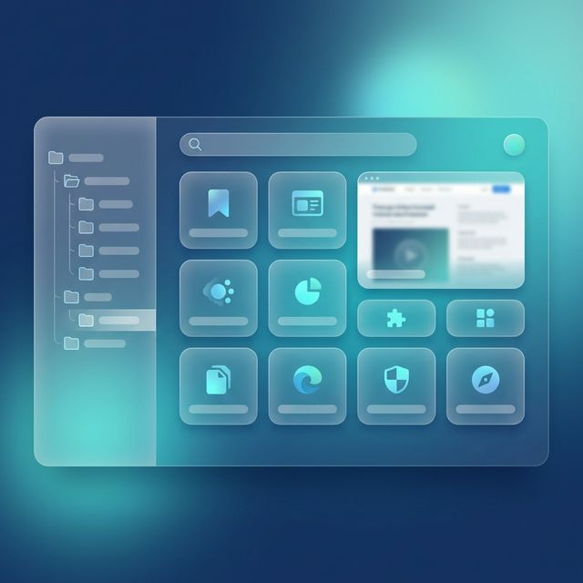
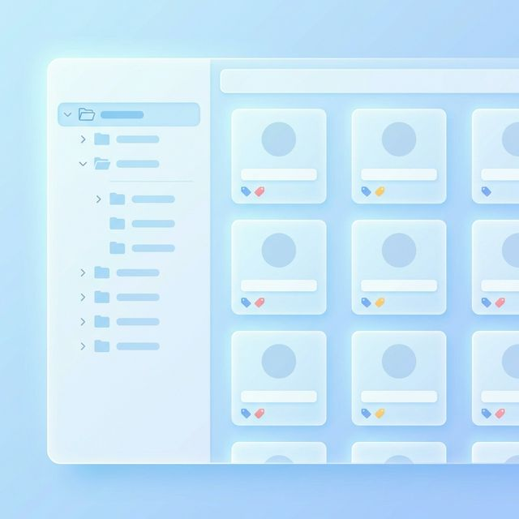

Smart Favorites v2.0.0
ブックマーク管理を、よりスマートに
整理整頓を極めたい方のためのブラウザ拡張機能。無制限のカテゴリ、バージョン管理されたクラウドバックアップ、デバイス間のメタデータ追跡により、あなたの知識を二度と失わせません。
主な機能
📁
無制限のカテゴリ
フォルダ階層の制限から解放。無限にネスト可能なカテゴリで、あなただけのナレッジグラフを構築しましょう。
🏷️
スマートタグ
フォルダだけではありません。複数のタグを付けて、カテゴリを超えた瞬時のフィルタリングとアーカイブを実現します。
☁️
Supabase 同期
Supabase によるバージョン管理同期。すべての同期がスナップショットとして保存。最大 100 個の履歴からいつでも復元可能です。
🔍
全文曖昧検索
Fuse.js エンジン搭載。タイトル、URL、説明、カテゴリ、タグを対象にミリ秒単位で曖昧検索が可能です。
🛡️
バックアップ戦略
ローカル自動バックアップとクラウド履歴管理。保存数をカスタマイズし、ストレージ効率を最大化します。
🌐
デバイス追跡
ブラウザ (Chrome/Edge) や OS (Mac/Win) を自動識別。マルチデバイス環境でもバックアップ元を迷いません。
📁 究極の整理体験
- 無限のフォルダ階層。
- リスト、グリッド、カードの 3 つの表示モード。
- タイトル、日時、訪問数、最終アクセスでの並べ替え。
- Favicon 自動取得で、視覚的に分かりやすい管理。

🔄 安心のデータ保護
- 上書きではなく、フルスナップショット保存。
- デバイス識別情報付きの詳細な履歴ログ。
- ワンクリック復元で、デバイス移行もスムーズに。
- クラウド保存数のカスタマイズでデータベースを軽量に維持。

⌨️ 効率を追求した設計
- ショートカットキーで検索窓を即起動、キーボードだけで完結。
- 右クリックメニューからターゲットフォルダへ一撃保存。
- ブラウザ標準ブックマークとの同期、JSON でのインポート・エクスポート。
- 日本語、英語、中国語をネイティブサポート。